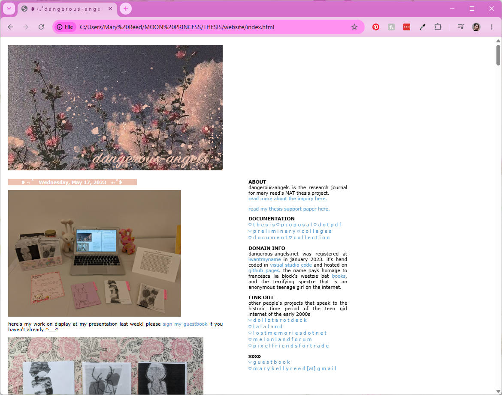
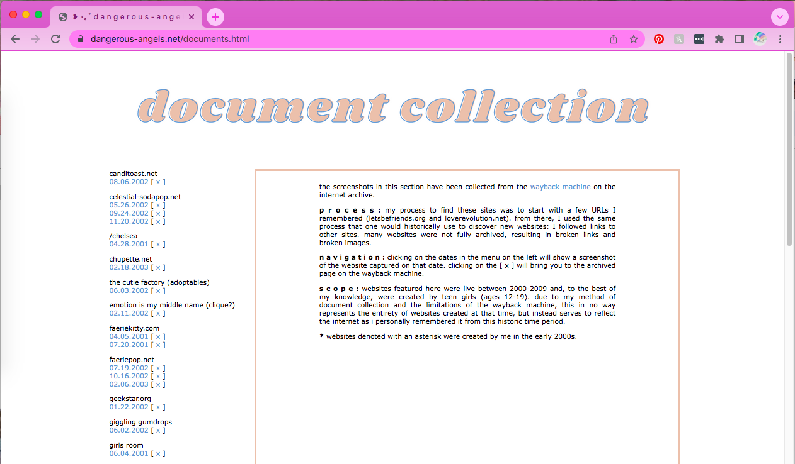

dangerous-angels.net (teenage girls as sophisticated producers of new media on the 2000s internet)
2023
Visual Studio Code (HTML, CSS)

dangerous-angels.net started as the research journal for my master's thesis, which asked the question what motivates the desire to create and consume images and other media, as seen through the lens of the teen girl Internet of the 2000s? I chose to create a simple blog for the research journal, following production methods from the time period of 2000-2009 that I was focusing on.
Although the blog wasn't conceptualized as an artwork on its own, the process revealed that building websites was and always had been an artistic practice for me.
The blog was originally located at dangerous-angels.net, but I allowed the domain name registration to expire. I've moved the files to this website instead so they can continue to be easily accessed. Click the button below to explore.

In addition to the blog, the page includes a collection of links to historic 2000s webpages. In the future, I plan to add more of the findings from my thesis, which connect to web revival and net art movements of today.
© 2026 Mary Reed